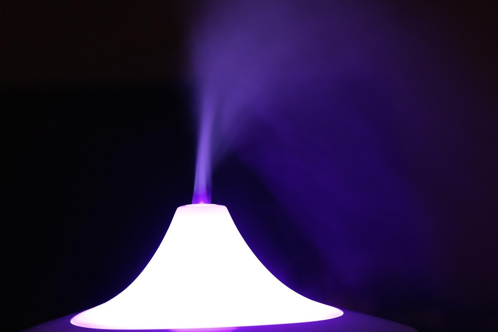
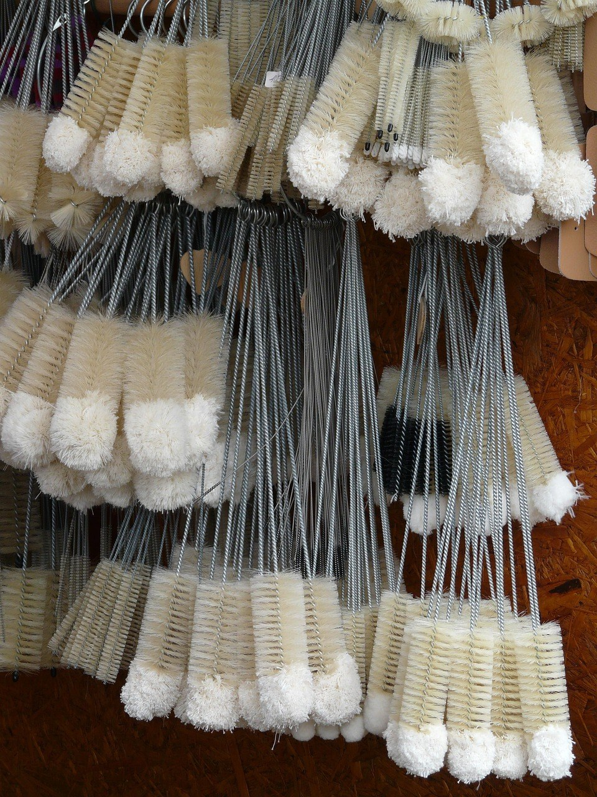
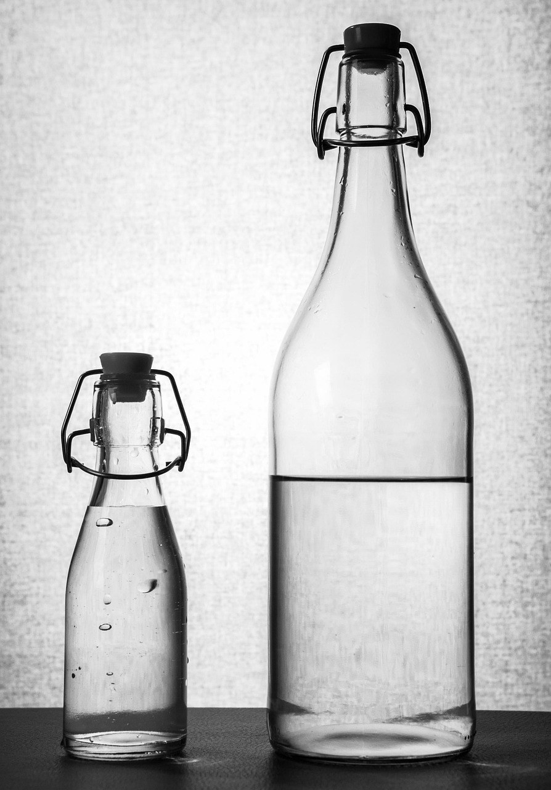

[사진 1: 썸네일]
가습기 물통 바닥이 미끈거리거나, 진동판 주변에 하얀 물때가 동그랗게 낀 걸 본 적 있나요? 초음파 가습기는 물을 데우지 않고 그대로 뿜어내는 방식이라, 물통과 진동판이 깨끗한지가 특히 중요해요.
그런데 진동판은 작고 예민해서 어떻게 닦아야 할지 막막하죠. 오늘은 초음파 가습기 세척에서 가장 많이 묻는 질문을 하나씩 짚으면서, 매일 할 일과 주 1회 할 일을 나눠 정리해 드릴게요.
[사진 2]
가열식은 물을 끓여 수증기로 내보내지만, 초음파식은 진동판이 물을 아주 작은 입자로 쪼개 그대로 내보내요. 그래서 물속에 있던 것도 함께 공기 중으로 나가기 쉬워요.
수돗물 속 미네랄이 함께 나오면 가구 위에 하얀 가루가 앉는 '백분 현상'이 생기기도 해요. 물을 오래 받아 두지 않고, 물통을 자주 비우는 것만으로도 관리가 훨씬 쉬워져요.
✍️ [내 경험 한두 줄: 우리 집 가습기는 어느 방에, 하루에 몇 시간쯤 켜 두나요?]
초음파 가습기 세척은 한 번에 크게 하기보다 나눠서 하는 게 편해요. 아래 표를 기준으로 삼되, 제품 설명서에 적힌 주기가 있으면 그걸 먼저 따르세요.
| 주기 | 할 일 | 포인트 |
|---|---|---|
| 매일 | 남은 물 버리고 새 물 받기 | 물통을 한 번 헹군 뒤 채우기 |
| 매일 | 물통·수조 물기 말리기 | 안 쓰는 낮에는 뚜껑 열어 두기 |
| 주 1회 이상 | 물통 안쪽 솔 세척 | 미끈거림이 느껴지면 바로 |
| 주 1회 이상 | 진동판 주변 닦기 | 부드러운 솔·천으로 살살 |
| 보관 전 | 전체 세척 후 완전 건조 | 물기 남으면 곰팡이 원인 |
[사진 3]
📷 [직접 찍은 사진 넣기: 가습기 물통을 비우고 뚜껑을 열어 말려 둔 모습]
먼저 전원 플러그를 뽑고 물을 모두 버리세요. 진동판은 가습기 전용 솔이나 부드러운 천으로 살살 문질러 닦는 게 기본이에요. 제조사들도 진동판은 솔이나 부드러운 수건으로 닦으라고 안내해요.
철수세미나 칼, 손톱으로 긁으면 표면이 상해 분무량이 줄 수 있어요. 틈이 좁은 미니 가습기는 면봉을 쓰면 편하고, 본체 안쪽 전기 부품 쪽으로 물이 들어가지 않게 기울여 헹구세요.
✍️ [내 경험 한두 줄: 가습기 물때가 제일 잘 끼는 곳은 어디였나요? (물통 바닥/진동판 주변/뚜껑)]
하얀 물때는 물속 미네랄이 굳은 것이라 구연산 같은 산성 세정제로 잘 녹아요. 다만 초음파 가습기는 제품마다 허용하는 세정제가 달라서, 설명서에 구연산 사용 안내가 있는지 먼저 확인해야 해요.
[사진 4]
네, 씻는 것만큼 말리는 게 중요해요. 물기가 남은 채로 조립하면 물통 안쪽이 다시 미끈거리기 쉬워요.
세척이 끝나면 물통은 거꾸로 세워 두고, 수조와 진동판 주변은 마른 천으로 물기를 닦아 주세요. 다 마른 뒤에 새 물을 받아 쓰면 돼요.
Q. 수돗물 대신 정수기 물을 넣어도 되나요?
A. 제품 설명서를 따르는 게 가장 정확해요. 다만 어떤 물이든 받아 둔 채 오래 두지 말고 매일 갈아 주는 게 기본이에요.
Q. 물통 안쪽이 미끈거리면 바로 씻어야 하나요?
A. 네, 미끈거림은 물때가 생기기 시작했다는 신호예요. 솔로 닦고 충분히 헹군 뒤 완전히 말려 주세요.
Q. 진동판 색이 변했는데 고장인가요?
A. 물때가 굳은 경우가 많아요. 부드럽게 닦아도 분무량이 계속 줄면 서비스센터에 문의하세요.
정리하면, 초음파 가습기 세척은 매일 물 갈기와 말리기, 주 1회 솔 세척, 물때는 설명서가 허용한 방법으로만이 기준이에요. 진동판은 긁지 말고 살살, 세정제는 섞지 않는 것만 기억하세요.
여러분은 가습기를 며칠에 한 번 씻고 계신가요? 각자 쓰는 세척 요령을 댓글로 나눠 주세요.
인스타그램 @todayzip.info 에서 살림 꿀팁을 30초 영상으로도 볼 수 있어요.